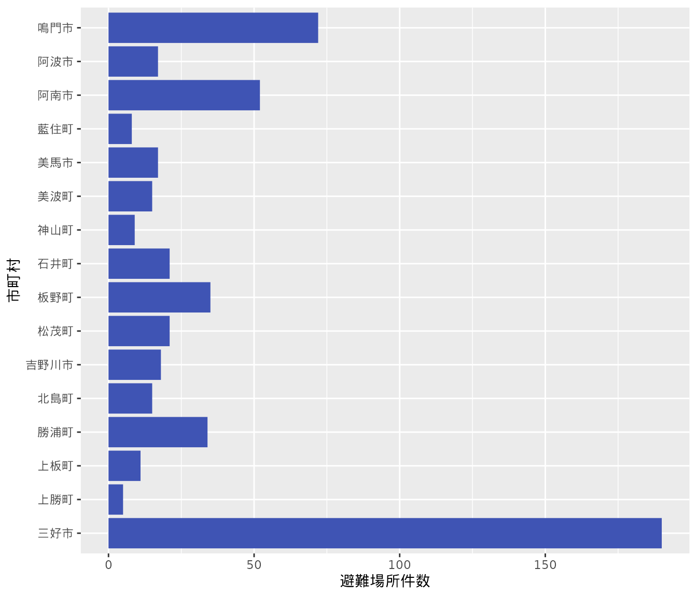

library(readr) # 表形式データの読み込み
library(dplyr) # データ操作
library(ggplot2) # データ可視化
library(here) # ファイルの指定を容易にするオープンデータの活用
オープンデータの取得から操作、可視化まで。
徳島県オープンデータポータルサイトから緊急避難場所 (徳島県)のデータをRで読み込み、処理します。 リンク先にはいくつかのデータがあります。ここでは「洪水_登録データ一覧_2022年10月26日.csv (CSV 121KB)」を例に解説を行います。
1. パッケージの読み込み
Rではパッケージと呼ばれる機能拡張をユーザーが自由に導入することが可能です。 パッケージの導入により、Rで実現可能な枠が広がります。 Rのインストール時に利用可能な、組み込みパッケージがありますが、これに加えていくつかのパッケージを導入しておくと、Rでの作業が快適になります。
パッケージの読み込みはlibrary({パッケージ名})の形式で行います。 次のコードではいくつかのパッケージを読み込んでいます。 各パッケージがどのような機能をもつか、コメントとして示しました。 Rでは# 以降の文章はコメントとして扱われます。 コメントは、後からコードを見返した際、どのような処理をなぜ行ったのかを理解するのに役立つため、必要に応じて書いておくことが望ましいです。
2. データの読み込み
データをRへ読み込むには、次に示す通り、いくつかの方法があります。
- 対象ファイルを利用しているコンピュータのローカルディスクへ保存し、ファイルが置かれた場所（パス）を指定する
- インターネット上に置かれたファイルのURLを指定する
- RStudioのImport Dataset機能
ここでは、すでにデータが手元にあることを想定し、1の方法でデータを読み込みます。read_csv()関数のfile引数にデータが保存されているパスを指定しましょう。 パスの値をfile = "パス"の形式で記述します。パスを引用符 " で囲む必要がある点に注意してください。 Rでは文字列を引用符で囲むルールが存在します。 また、locale引数にもファイル読み込みのためのオプションを指定し、コードを実行します。
read_csv(here("data-raw/tksm_shelter_for_flood.csv"),
# 読み込みのオプション
# 日本語が使われる一部のファイルを読み込むと、文字化けをすることがあります。
# このファイルでも日本語が使われているため、次のオプションの指定で文字化けを回避します。
locale = locale(encoding = "SHIFT-JIS"))Rows: 701 Columns: 19
── Column specification ────────────────────────────────────────────────────────
Delimiter: ","
chr (6): タイトル, 所在地, 連絡先, 分類, 災害種別, 備考
dbl (2): 緯度, 経度
lgl (11): 市町村, 写真1, 写真2, 写真3, 写真4, 写真5, 写真6, 写真7, 写真8, 写真9, 写真10...
ℹ Use `spec()` to retrieve the full column specification for this data.
ℹ Specify the column types or set `show_col_types = FALSE` to quiet this message.# A tibble: 701 × 19
市町村 タイトル 所在地 緯度 経度 写真1 写真2 写真3 写真4 写真5 写真6 写真7
<lgl> <chr> <chr> <dbl> <dbl> <lgl> <lgl> <lgl> <lgl> <lgl> <lgl> <lgl>
1 NA 板野町防… 徳島… 34.1 134. NA NA NA NA NA NA NA
2 NA 新野小学… 阿南… 33.8 135. NA NA NA NA NA NA NA
3 NA 新野東小… 阿南… 33.8 135. NA NA NA NA NA NA NA
4 NA 阿南第二… 阿南… 33.9 135. NA NA NA NA NA NA NA
5 NA 桑野小学… 阿南… 33.9 135. NA NA NA NA NA NA NA
6 NA 山口小学… 阿南… 33.9 135. NA NA NA NA NA NA NA
7 NA 桑野公民… 阿南… 33.9 135. NA NA NA NA NA NA NA
8 NA 大井小学… 阿南… 33.9 135. NA NA NA NA NA NA NA
9 NA 加茂谷中… 阿南… 33.9 135. NA NA NA NA NA NA NA
10 NA 阿南市ク… 阿南… 33.9 135. NA NA NA NA NA NA NA
# … with 691 more rows, and 7 more variables: 写真8 <lgl>, 写真9 <lgl>,
# 写真10 <lgl>, 連絡先 <chr>, 分類 <chr>, 災害種別 <chr>, 備考 <chr>Rでは処理の結果を再利用するために、オブジェクトを利用します。 読み込んだデータに対して、処理を加えるためにオブジェクトとして保存しましょう。 オブジェクトへの保存は「代入」とも呼ばれます。 代入は <- （代入演算子）の左側に保存先のオブジェクト名、右側に保存したい処理内容を記述して実行します。
# 読み込んだcsvの内容を df_hinanjyo として記録する
df_hinanjyo <-
read_csv(here("data-raw/tksm_shelter_for_flood.csv"),
locale = locale(encoding = "SHIFT-JIS"))Rows: 701 Columns: 19
── Column specification ────────────────────────────────────────────────────────
Delimiter: ","
chr (6): タイトル, 所在地, 連絡先, 分類, 災害種別, 備考
dbl (2): 緯度, 経度
lgl (11): 市町村, 写真1, 写真2, 写真3, 写真4, 写真5, 写真6, 写真7, 写真8, 写真9, 写真10...
ℹ Use `spec()` to retrieve the full column specification for this data.
ℹ Specify the column types or set `show_col_types = FALSE` to quiet this message.オブジェクトに保存した内容（値）はいつでも呼び出すことができます。
# コンソールでオブジェクト名を実行すると値が呼び出される
df_hinanjyo読み込んだファイルのように、表形式で表現されるデータのことをRではデータフレームと呼びます。 データフレームは表計算ソフトのように1行1列それぞれに値が格納されています。
上記のようにオブジェクト名をコンソールで実行してデータフレームを表示することもできますが、 データフレームの中身を確認する関数はいくつかあります。
View(df_hinanjyo)# データ中の各変数の値を縦方向に出力します
glimpse(df_hinanjyo)Rows: 701
Columns: 19
$ 市町村 <lgl> NA, NA, NA, NA, NA, NA, NA, NA, NA, NA, NA, NA, NA, NA, NA, N…
$ タイトル <chr> "板野町防災ステーション", "新野小学校", "新野東小学校", "阿南…
$ 所在地 <chr> "徳島県板野郡板野町川端字新手崎18-1", "阿南市新野町南宮ノ久保…
$ 緯度 <dbl> 34.13761, 33.84699, 33.84517, 33.87679, 33.87358, 33.87303, 3…
$ 経度 <dbl> 134.4729, 134.5811, 134.6042, 134.6283, 134.6118, 134.5819, 1…
$ 写真1 <lgl> NA, NA, NA, NA, NA, NA, NA, NA, NA, NA, NA, NA, NA, NA, NA, N…
$ 写真2 <lgl> NA, NA, NA, NA, NA, NA, NA, NA, NA, NA, NA, NA, NA, NA, NA, N…
$ 写真3 <lgl> NA, NA, NA, NA, NA, NA, NA, NA, NA, NA, NA, NA, NA, NA, NA, N…
$ 写真4 <lgl> NA, NA, NA, NA, NA, NA, NA, NA, NA, NA, NA, NA, NA, NA, NA, N…
$ 写真5 <lgl> NA, NA, NA, NA, NA, NA, NA, NA, NA, NA, NA, NA, NA, NA, NA, N…
$ 写真6 <lgl> NA, NA, NA, NA, NA, NA, NA, NA, NA, NA, NA, NA, NA, NA, NA, N…
$ 写真7 <lgl> NA, NA, NA, NA, NA, NA, NA, NA, NA, NA, NA, NA, NA, NA, NA, N…
$ 写真8 <lgl> NA, NA, NA, NA, NA, NA, NA, NA, NA, NA, NA, NA, NA, NA, NA, N…
$ 写真9 <lgl> NA, NA, NA, NA, NA, NA, NA, NA, NA, NA, NA, NA, NA, NA, NA, N…
$ 写真10 <lgl> NA, NA, NA, NA, NA, NA, NA, NA, NA, NA, NA, NA, NA, NA, NA, N…
$ 連絡先 <chr> "088-637-5585", "0884-36-2021", "0884-36-2103", "0884-26-0203…
$ 分類 <chr> "指定緊急避難場所（法指定）", "指定緊急避難場所（法指定）", "…
$ 災害種別 <chr> "洪水,崖崩れ等,地震,大規模な火事,内水氾濫", "洪水,崖崩れ等,地…
$ 備考 <chr> NA, NA, NA, NA, NA, NA, NA, NA, NA, NA, NA, NA, NA, NA, NA, N…
ノート
インターネットが利用できない環境では、URLを指定したデータの読み込みが行えません。 ローカルディスクにファイルをダウンロードしておくことで、インターネット非接続状態でもファイルの読み込みが可能になります。 次のコマンドを実行するとファイルのダウンロード、ローカルでのパスを指定したファイルの読み込みが行われます。
fs::dir_create(here("data-raw"))
# インターネット上のファイルをダウンロードする（ここではインターネット接続が必要です）
download.file("https://opendata.pref.tokushima.lg.jp/dataset/487/resource/6553/洪水_登録データ一覧_2022年10月26日_15時14分.csv",
# data-rawフォルダの中に tksm_shelter_for_flood.csv として保存します
here("data-raw/tksm_shelter_for_flood.csv"))
# 保存したcsvファイルのパスをfile引数で指定します
df_hinanjyo <-
read_csv(
file = here("data-raw/tksm_shelter_for_flood.csv"),
locale = locale(encoding = "SHIFT-JIS"))
ノート
上記の処理はRStudioのFile import機能を使っても行えます。 この機能には、データの読み込み結果をプレビューできる、Rのコード入力を最低限に抑えることができるなどの利点があります。
3. データの操作・加工
データを読み込んだ後は自由自在にデータを操作したり加工を行うことができます。 以下に示すとおり、データ操作に便利な関数を提供するdplyrパッケージを使ってデータに変更を加えていきましょう。
select()… 列の選択filter()… 行の絞り込みmutate(),transmute()… 値の編集group_by(),summarise()… グループごとに値を集計するarrange()… 行の並び替えcount()… 項目の頻度を数える*_join()… データフレームの結合
データフレームを確認するとわかるように、このデータには複数の「写真」の列が存在します。 これらの列の中には値がありません。 値がない状態を「欠損」は呼ばれ、そのことを表現するために欠損値 (NA) が使われます。 こうした欠損値からなる列は不要と判断し、列を絞り込みましょう。 列の選択はselect()関数で行います。この関数の引数に、残したい、または削除したい変数を記述して実行します1。 関心のある列にデータを制限することで、データの見通しがよくなります。
df_hinanjyo <-
# 関心のある列を選び直す
select(df_hinanjyo,
`市町村`, `タイトル`, `所在地`, `緯度`, `経度`, `分類`)
glimpse(df_hinanjyo)Rows: 701
Columns: 6
$ 市町村 <lgl> NA, NA, NA, NA, NA, NA, NA, NA, NA, NA, NA, NA, NA, NA, NA, N…
$ タイトル <chr> "板野町防災ステーション", "新野小学校", "新野東小学校", "阿南…
$ 所在地 <chr> "徳島県板野郡板野町川端字新手崎18-1", "阿南市新野町南宮ノ久保…
$ 緯度 <dbl> 34.13761, 33.84699, 33.84517, 33.87679, 33.87358, 33.87303, 3…
$ 経度 <dbl> 134.4729, 134.5811, 134.6042, 134.6283, 134.6118, 134.5819, 1…
$ 分類 <chr> "指定緊急避難場所（法指定）", "指定緊急避難場所（法指定）", "…加えて、日本語の列名から英語での列名に変更します。
# 緯度 ... latitude
# 経度 ... longitude
colnames(df_hinanjyo) <-
c("city", "title", "address", "latitude", "longitude", "type")
head(df_hinanjyo)# A tibble: 6 × 6
city title address latit…¹ longi…² type
<lgl> <chr> <chr> <dbl> <dbl> <chr>
1 NA 板野町防災ステーション 徳島県板野郡板野町川端字新… 34.1 134. 指定…
2 NA 新野小学校 阿南市新野町南宮ノ久保70-1 33.8 135. 指定…
3 NA 新野東小学校 阿南市新野町是国37-2 33.8 135. 指定…
4 NA 阿南第二中学校 阿南市内原町竹ノ内口143-1 33.9 135. 指定…
5 NA 桑野小学校 阿南市桑野町岡元40-1 33.9 135. 指定…
6 NA 山口小学校 阿南市山口町末広12-1 33.9 135. 指定…
# … with abbreviated variable names ¹latitude, ²longitudeここでcity列に注目します。 この列は避難所の位置する市町村を記録すべき列ですが、いずれの行にも値は含まれません。
# cityの項目を数える --> NA (欠損値)
count(df_hinanjyo, city)# A tibble: 1 × 2
city n
<lgl> <int>
1 NA 701# 欠損値の行を確認
filter(df_hinanjyo, is.na(city))
# 欠損値でない行を確認
filter(df_hinanjyo, !is.na(city))そこで避難所の住所を記録したaddress列の値から市町村名の部分だけを抜き出して、 city列を上書きすることを考えましょう。 addressには徳島県板野郡板野町川端字新手崎18-1のように住所が文字列として記録されています。
# 1行目の住所を表示
df_hinanjyo$address[1][1] "徳島県板野郡板野町川端字新手崎18-1"# すべての住所を表示
# df_hinanjyo$address
# 県名を含む住所から市町村の部分を取り出す
stringr::str_extract(df_hinanjyo$address[1],
pattern = "(.{2}郡.{2,3}町|.{2,3}(市|町|村))")[1] "板野郡板野町"stringr::str_remove(df_hinanjyo$address[1], "徳島県")
stringr::str_extract(df_hinanjyo$address[1], ".{2}郡.{2,3}町")
x <-
which(is.na(stringr::str_extract(df_hinanjyo$address, "(.{2}郡.{2,3}町|.{2,3}(市|町|村))")))
df_hinanjyo$address[x]すべての行にこの処理を適用しましょう。 mutate()関数を使って、任意の処理を各行へ適用可能です。
df_hinanjyo <-
mutate(df_hinanjyo,
# 住所から市町村名の部分を取り出し、city列に格納する
city = stringr::str_extract(address, "(.{2}郡.{2,3}町|.{2,3}(市|町|村))"))結果を確認します。 先ほどcount()関数でcity列の項目を数えた際には欠損値だけでしたが、 今度は市町村別の避難場所のカウントが正しく行われているように見えます。
df_tokushima_hinanjyo_count <-
# sort = TRUE ... 市町村の項目が多い順（降順）に出力する
count(df_hinanjyo, city, sort = TRUE)
df_tokushima_hinanjyo_count# A tibble: 46 × 2
city n
<chr> <int>
1 三好市 190
2 <NA> 75
3 鳴門市 72
4 阿南市 52
5 板野町 35
6 勝浦町 34
7 松茂町 21
8 石井町 21
9 吉野川市 18
10 美馬市 17
# … with 36 more rowsなお、この処理はgroup_by()関数とsummarise()関数を組み合わせても実行できます。group_by()は指定した列の項目ごとにグループを作成し、グループに対する操作を可能にします。 summarise()関数はそうしたグループへの集計を行う際に利用します。 例えば、クラスで行った教科ごとの平均点を求める際、教科をグループとしてその平均値を求める、といった処理がこの2つの関数を組み合わせることで可能となります。
# 下記と同じ結果を得る
# count(df_hinanjyo, city, sort = TRUE)
arrange(summarise(group_by(df_hinanjyo,
city),
n = n()),
desc(n))グループ化した項目を数えるのにn()関数を使います。 このようなグループごとの項目の集計は頻繁に行う処理のため、ショートカットとしてcount()関数が用意されています。
# いくつかの行は欠損値のまま
filter(df_tokushima_hinanjyo_count, is.na(city))# A tibble: 1 × 2
city n
<chr> <int>
1 <NA> 75市町村別の避難場所の集計結果を見ると、三好市が最も数が多いことがわかります。 しかしこの値は人口や面積を考慮した値ではありません。 人口や面積の単位あたりの避難場所の数を比較することで、市町村別の評価が可能となります。
グラフの作成で利用した教育用標準データセットの中には、市区町村別の統計データを記録したものもあります。 データはすでにダウンロードされ、徳島県の市町村に関する情報が参照できる状態となっています。 次のコマンドを実行し、データをRに読み込みましょう。
df_ssdse_a_tiny_tokushima <-
read_rds(here("data-raw/ssdse_a_tiny_tokushima.rds"))
df_ssdse_a_tiny_tokushima# A tibble: 24 × 4
市区町村 `人口・世帯数_総人口` `総面積（北方地域及び竹島を除く）` 可住地面積
<chr> <dbl> <dbl> <dbl>
1 徳島市 252391 19139 14096
2 鳴門市 54622 13566 6466
3 小松島市 36149 4537 3882
4 阿南市 69470 27925 12892
5 吉野川市 38772 14414 6128
6 阿波市 34713 19111 9003
7 美馬市 28055 36714 7504
8 三好市 23605 72142 8915
9 勝浦町 4837 6983 2264
10 上勝町 1380 10963 1264
# … with 14 more rowsdplyrパッケージではデータフレームを結合する関数*_join()を提供します。 関数の引数に対象となる2つのデータフレームを指定し、結合の際のキーとなる変数を引数byに与えて実行します。
df_tokushima_hinanjyo_count <-
inner_join(
df_tokushima_hinanjyo_count,
df_ssdse_a_tiny_tokushima,
by = c("city" = "市区町村"))
df_tokushima_hinanjyo_count# A tibble: 16 × 5
city n `人口・世帯数_総人口` 総面積（北方地域及び竹島を除く…¹ 可住…²
<chr> <int> <dbl> <dbl> <dbl>
1 三好市 190 23605 72142 8915
2 鳴門市 72 54622 13566 6466
3 阿南市 52 69470 27925 12892
4 板野町 35 13042 3622 1964
5 勝浦町 34 4837 6983 2264
6 松茂町 21 14583 1424 1418
7 石井町 21 24833 2885 2648
8 吉野川市 18 38772 14414 6128
9 美馬市 17 28055 36714 7504
10 阿波市 17 34713 19111 9003
11 北島町 15 22745 874 874
12 美波町 15 6222 14074 1541
13 上板町 11 11384 3458 2243
14 神山町 9 4647 17330 2419
15 藍住町 8 35246 1627 1627
16 上勝町 5 1380 10963 1264
# … with abbreviated variable names ¹`総面積（北方地域及び竹島を除く）`,
# ²可住地面積cityとnの2列からなるデータフレームdf_tokushima_hinanjyo_countに、df_ssdse_a_tiny_tokushimaがもつ列の情報が加わったことがわかります。
追加された情報から、避難場所の数を単位当たり数を求めてみます。
# 災害種別_洪水
df_tokushima_hinanjyo_count <-
transmute(df_tokushima_hinanjyo_count,
`市町村` = city,
`避難場所件数` = n,
`避難場所件数(人口1万人あたり)` = (n / `人口・世帯数_総人口`) * 10000)
df_tokushima_hinanjyo_count <-
# 人口1万人当たりの避難場所件数の順に並び替え
arrange(df_tokushima_hinanjyo_count,
desc(`避難場所件数(人口1万人あたり)`))人口1万人あたりで見ても、三好市の避難場所件数が最も多いことに変わりはありませんでしたが、 勝浦川の流域に位置する勝浦町、上勝町が上位になりました。
4. グラフの作成
続いて、市町村別に避難場所の数を集計したデータ df_tokushima_hinanjyo_count をもとに、簡単なグラフを作成してみましょう。
避難場所の数（数量）を市町村で比較する際、適したグラフの種類は何でしょうか。 ここでは棒グラフと円グラフによるグラフ作成の例を示します。
p <-
ggplot(data = df_tokushima_hinanjyo_count,
aes(市町村, 避難場所件数)) +
# 棒グラフの指定
geom_bar(
stat = "identity", # n （市町村別の避難場所の数）が棒の高さに用いられる
fill = "#3F54B4" # 棒の塗りつぶしの色
)
pgeom_bar()関数を指定して棒グラフを描画しましたが、このグラフはいくつかの理由で情報を適切に伝えられていません。 例えば、
- x軸の市町村の間隔が狭いために文字が潰れてしまっている
- x軸の市町村の並びと避難場所の件数に関係がなく、関係を読み取りにくい
この問題を改善してみましょう。 まず、1の問題はx軸に複数の項目を並べる際に生じる問題です。 特に項目数が多い場合、横幅を広くとらないと文字が潰れてしまいます。 根本的な対策は、x軸とy軸を入れ替えて表示することです。 これにより、項目の間隔を気にする必要がなくなります（ただし高さを十分にする）。 すでに作成したグラフに対して、coord_flip()関数を適用するとx軸とy軸の入れ替えが行われます。
p +
coord_flip()
続いて市町村名と避難場所の件数の関係をわかりやすく伝える工夫をしてみます。 現在の図は適当に市町村名が並んでいるように見えるため、避難場所の件数で入れ替えるようにします。 合わせてグラフ全体の見た目も調整しておきましょう。
p <-
ggplot(data = df_tokushima_hinanjyo_count,
aes(forcats::fct_reorder(市町村, 避難場所件数), 避難場所件数)) +
geom_bar(stat = "identity",
fill = "#3F54B4") +
coord_flip() +
xlab(NULL) +
ylab("避難場所の件数") +
labs(title = "徳島県内緊急避難場所（災害種別 洪水）の市町村別件数")
p5. まとめ
演習
徳島県オープンデータポータルサイトから適当なデータを見つけ、ファイルをRに読み込みましょう。
読み込んだデータをdplyrパッケージのデータ操作のための関数を使って処理してみましょう。
select()filter()mutate(),transmute()group_by(),summarise()arrange()count()*_join()
などの関数が利用できます
脚注
列を削除するには、列名の前に
!を付けて実行します。例)select(df_hinanjyo, !c(市町村,分類))↩︎